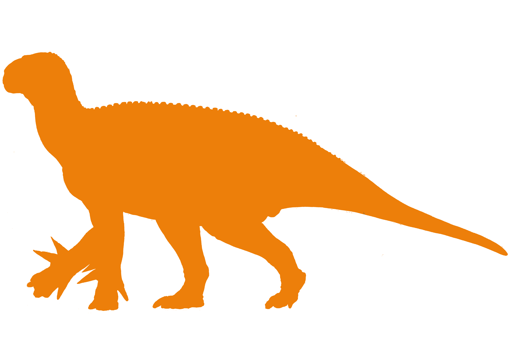

Iguanodon 027
Name: Nigel
Species: Iguanodon Bernissartensis
Diet: Herbivore
Status: Alive
Iguanodon Bernissartensis was an ornithopod dinosaur of the Iguanodontidae family that lived from the late Jurassic to the early Cretaceous period of Europe. It was around 30 feet long and weighing 4.5 tons; it had a bulky body with robust arms equipped with thumb spikes on each hand that it would have used for defence. It lived in forests and coastal areas where they would've had to defend themselves against predators such as baryonyx and neovenator.
Nigel is an adult male who frequently travels in a herd of other Iguanodons that inhabit the south-eastern open forest regions of the isle, where other iguanodon herds have been reported in other areas of the island. All the iguanodons were the creations of Green Inc, an agricultural organisation that planned to replace cows and other livestock with ornithopod dinosaurs. So far, the majority of Green Inc's ornithopods have been relocated to the isle, however many have yet to be recovered as they are frequently released into the wild on the mainland out of neglegance and inability to properly care for the animals, heavily affecting the ecosystems by depleting the vegetation at a fast rate. Nigel was born with polydactyly, in which he has two thumb spikes on each hand instead of one; a deformality commonly found in Green Inc's Iguanodons, some even sporting three thumb spikes on each hand.
